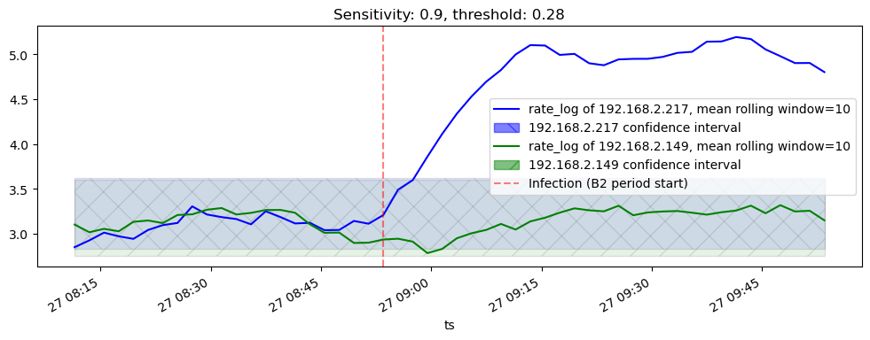

| model | normed | skips_and_weights | test_data_auc | fpr | tpr | thresholds | |
|---|---|---|---|---|---|---|---|
| 23 | RF | True | [2, 4, 0, 0] | 0.9355 | [0.0, 0.0, 0.0, 0.0, 0.0, 0.0, 0.0, 0.00010794... | [0.0, 0.00010486577181208053, 0.00031459731543... | [1.98, 0.98, 0.97, 0.96, 0.95, 0.94, 0.92, 0.9... |
| 44 | RF | True | [2, 4, 2, 4] | 0.9324 | [0.0, 0.0, 0.0, 0.0, 0.0, 0.000107944732297063... | [0.0, 0.00041946308724832214, 0.00094379194630... | [2.0, 1.0, 0.99, 0.98, 0.97, 0.96, 0.95, 0.94,... |
| 5 | RF | True | [1, 0, 0, 0] | 0.9278 | [0.0, 0.0, 0.0, 0.0, 0.0001079447322970639, 0.... | [0.0, 0.00010486577181208053, 0.00020973154362... | [2.0, 1.0, 0.99, 0.98, 0.97, 0.95, 0.93, 0.92,... |
22 Results
22.1 DNS-over-HTTPS detection model training results
We have built a number of models based on different algorithms and hyperparameters. Models were evaluated on the “robustness”: ability to detect DoH not only in the same network where training data was recorded, but on other networks too. The test dataset containing 50% from the test sample of training data, and 50% from the recorded traffic from sandbox network. ROCs of these models are in Figure 22.1.


Top 3 models with normalization based on their AUC:
Top 3 models without normalization based on their AUC:
| model | normed | skips_and_weights | test_data_auc | fpr | tpr | thresholds | |
|---|---|---|---|---|---|---|---|
| 53 | RF | False | [2, 0, 0, 0] | 0.9780 | [0.0, 0.0, 0.0, 0.0001079447322970639, 0.00010... | [0.0, 0.3485738255033557, 0.3976510067114094, ... | [2.0, 1.0, 0.99, 0.98, 0.97, 0.96, 0.95, 0.94,... |
| 68 | RF | False | [2, 4, 0, 0] | 0.9761 | [0.0, 0.0, 0.0, 0.0001079447322970639, 0.00021... | [0.0, 0.34133808724832215, 0.3921979865771812,... | [2.0, 1.0, 0.99, 0.98, 0.97, 0.96, 0.95, 0.94,... |
| 86 | RF | False | [1, 4, 1, 4] | 0.9753 | [0.0, 0.0, 0.0, 0.0002158894645941278, 0.00021... | [0.0, 0.3493078859060403, 0.39890939597315433,... | [2.0, 1.0, 0.99, 0.98, 0.97, 0.96, 0.95, 0.94,... |
22.2 Flubot detection “Clean room” experiment 1 results
For this experiment we took 6 models mentioned above, and two models (normed and unnormed) with hyperparameters equal to [0,0,0,0], for the baseline comparison.
Interestingly, normalized model performed better than the unnormalized, which aligns with the original hypothesis but doesn’t align with the training test model comparison.
In the result, normed models with non-0 hyperparameters perform better or same as the baseline 0-0-0-0 models.
Unnormed models with non-0 hyperparameters perform worse than the baseline 0-0-0-0 models.
22.2.1 Baseline models
RF-unnormed-0-0-0-0:
0.80.9RF-normed-0-0-0-0:
0.80.9
22.2.2 Best unnormed and normed models
RF-unnormed-2-0-0-0:
0.80.9RF-normed-2-4-0-0:
0.80.922.3 Flubot detection “Real-world” experiment 2 results
In the last experiment we took the model which performed the best on the first experiment (RF-normed-2-4-0-0) and used to detect the machine browsing benign websites which is exposed to the FluBot malware at some point.
ARIMA time-series model was used to learn the hosts normal behavior and detect outliers (FluBot infection):
0.80.9